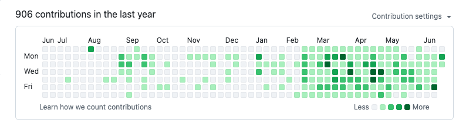
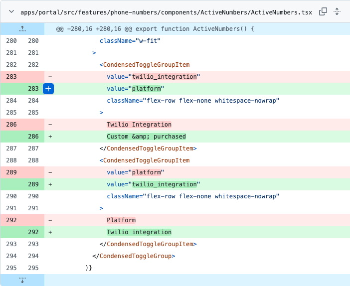

PMs Should Code, But Not Like That
Product managers should code. They should also be very clear about what their code is for.
There is a certain kind of product manager who learns just enough code to become dangerous.
I know this because, occasionally, I am that product manager.
The fantasy is obvious. You see a small product gap. You understand the customer problem. You know what the button should say, where it should go, and what should happen when someone clicks it. Engineering is busy, as engineering always is, because software has an infinite appetite for time. So you think: how hard can this be?
Several hours later you have created a "working" feature in the same sense that a chair balanced on two legs is working. It exists. It can be photographed. It might even survive a demo. But the developer who eventually opens the pull request will quietly age five years.
This is not a post about why PMs should not code. I think PMs should code.
But PMs should be very clear about what their code is for.
This has become more confusing because Codex, Claude Code, and the rest of the AI coding tools are now actually good enough to make a PM feel powerful.
Not theoretically powerful. Actually powerful.
You can open a repo, describe a change in normal human language, and a few minutes later there is a branch with working code. Sometimes it even passes tests, which is rude, because now your bad idea has gained credibility.
This is why LinkedIn is currently full of people declaring that PMs are all going to code now. PMs will build the feature. PMs will ship the product. PMs will replace the engineering backlog with vibes and a sufficiently confident prompt.
I think this is exactly the wrong lesson.
AI coding tools make PM coding easier. They do not make product code less real.
Codex can help you move faster, but it does not magically give you ownership of the system. Claude can generate a clean-looking implementation, but it does not know the five years of weird customer promises hiding behind your billing logic. The code may be syntactically fine and still be organizationally stupid.
That is the new trap.
Before, most PMs were limited by the fact that they could not build very much. This was annoying, but also protective. Now the tools remove that friction. A PM can build something much bigger than they personally understand. That feels like leverage. Sometimes it is. Sometimes it is just a faster way to create work for someone else.

In my experience, PM coding is useful for exactly two things.
First: updating frontend copy.
Copy is the perfect PM coding task. The risk is low, the blast radius is small, and the PM is often the person closest to the actual words.
If the empty state says something confusing, if the onboarding step has the wrong verb, if the tooltip is technically accurate but emotionally dead, just fix it. This is one of those rare situations where the person with the opinion can also safely be the person with the keyboard.

Second: building prototypes before engineering builds features.
A PM prototype is not a feature. This distinction matters.
A feature has to live in the product. It has to survive users, edge cases, permissions, analytics, billing states, localization, migrations, QA, future refactors, and whatever weird thing your biggest customer does every Friday at 4:58pm.
A prototype has one job: help you learn.
That is a much smaller job. Smaller jobs are beautiful. A prototype can be ugly. It can be hardcoded. It can have one happy path. It can require you to manually paste in a customer ID while apologizing on the call. It can run from an internal page called /please-do-not-judge-me.
The point is not to sneak a feature into production through the side door. The point is to make the eventual engineering work sharper.
Before engineering builds the thing, you can use a prototype to answer questions like:
- Does the customer understand the workflow?
- Is this even solving the right problem?
- What copy do people naturally use when they describe it?
- Which parts do they ignore?
- What is missing that we thought was obvious?
- What did we overcomplicate because we enjoy suffering?
This is good PM work. Code is just the medium.
Where PMs get into trouble is when the prototype starts dressing up as production software.
You add a real API call. Then a settings page. Then some state management. Then a permissions check, but only sort of. Then someone asks whether we can "just ship this version" because the customer liked it. At this point the developer assigned to make it real has inherited a haunted house with nice wallpaper.
If you try to build whole features this way, your developers will be pissed at you. They will also be right.
Developers are not annoyed because PMs wrote code. Most good developers like working with PMs who understand the material. They are annoyed because half-built product code creates ambiguity. Is this throwaway or real? Do we preserve the behavior? Is the weird data model intentional? Did anyone think about failure states? Why is there business logic in the React component? Why does this function have the emotional tone of a ransom note?
The more real your PM-coded feature becomes, the more expensive it is for engineering to unwind.
Sometimes I still try something too big. The prototype starts small, the customer feedback is good, and suddenly I have built 40% of a feature that should have had an engineer involved from the beginning.
At that point the right move is to hand it over, explain what you learned, and accept that much of the code may be deleted.
The learning is the asset. The code is scaffolding.
A useful rule: if your PM code helps engineering make a better decision, it was worth it. If your PM code forces engineering to clean up your decisions, you overreached.
AI does not change that rule. It just makes it easier to overreach.
Use Codex and Claude Code. Fix copy. Build demos. Compress a week of speculation into a 30-minute customer call.
Just do not confuse "I prompted this into existence" with "this is how we should ship it."